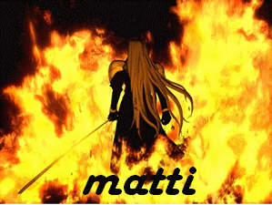

Forums galactiques > Taverne galactique : lieu de discussion informel > un homme seul
Pages : 1
| dark_matti Réputation à la taverne : 0  10/03 ETU 12:33 | Score : 0 Détails un homme poussa la porte de la taverne.
il etait grand porté une cape noir et avait l'air resérvé il alla a une table dans le fond s'assit et commandat un ver de vin chaud il regarder avec envie ces coalition qui se reunissait en comité pour parler de tout et de rien. il se leva avec ferocité et cria : -qui veut bien m'accepter dans une coalition? pris de peur,d'enervement et de stress il parti en courant mais un homme l'areta et lui dit:... | ||
| Ace Azzamen Réputation à la taverne : 1199  10/03 ETU 12:42 | Score : 0 Détails Je te souhaite une bonne route. Puisses-tu trouver dans ta nouvelle coalition ce que tu cherches.
| ||
| Amiral Tarkan Réputation à la taverne : 319  11/03 ETU 14:40 | Score : 0 Détails "La Main De Droknar"
Chaleureuse et accueillante, La Main de Droknar propose divers avantages à ces membres: - Une superbe carte de membre plastifiée - Une ambiance feutrée et bon enfant - Une coopération économique et militaire - Une assemblée démocratique sans censure - Un jacuzzi et un sauna ouvert 24/24 Venez nombreux (contactez l'Amiral Tarkan 0.05 leems/minutes) >Vous êtes le bienvenu si vous le désirez. |
Pages : 1
Forums galactiques > Taverne galactique : lieu de discussion informel > un homme seul